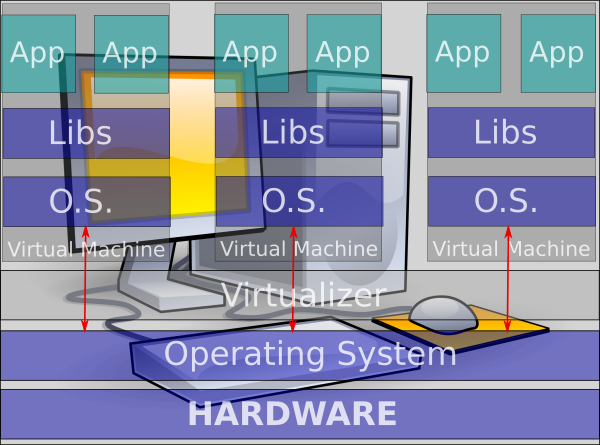

Agenda
- Virtualization
- Linux Containers
- What Kubernetes add to containers
- Q&A
Virtualization types
- Full virtualization (qemu, VirtualBox, VMWare, HyperV, ...)
- Paravirtualization (Xen)
- Containers (LXC, Docker, rkt, LXD, ...)
Full virtualization
Full machine have to be virtualized so Guest OS doesn't know that it runs in a virtualized environment.

Paravirtualization
Guest OS knows it runs as guest so every call attempt to Hardware is routed to Host OS.
Container
Container technology creates a "virtual" environment for each App without creating a virtual machine.

Container: Virtualization without virtualizator
What? A virtualization without virtualizator? How can be possible?
Behind the magic
- chroot (file system isolation)
- AppArmor, SELinux (security/access control)
- cgroup (cpu, memory, disk, i/o management - resource management)
- namespace (mnt, pid, net, ipc, userid)
What can I do with Containers?
Containers are a way to create virtual environment for you applications so that your deployment platform can be the same of production environment.
No More library or operating system version conflicts
Docker
Docker containers wrap up a piece of software in a complete filesystem that contains everything it needs to run: code, runtime, system tools, system libraries – anything you can install on a server. This guarantees that it will always run the same, regardless of the environment it is running in. (from Wikipedia)
# # example Dockerfile # FROM tech-stack:v0.0.19 MAINTAINER tquerci@gmail.com EXPOSE 25 # Copy config files ADD main.conf /etc/postfix/main.cf # Copy password file ADD sasl_passwd.conf /etc/postfix/sasl_passwd # Copy wrapper to start postfix and check if it run ADD postfix-wrapper.sh / # Set mail server name RUN echo "myorg.com" > /etc/mailname # Run password generator RUN postmap /etc/postfix/sasl_passwd # Start Postfix wrapper server CMD /postfix-wrapper.sh
How to use Docker
Build an image from the Dockerfile assign it a name.
$ docker build -t my_postfix .
And run the Postfix server container (in the foreground):
$ docker run --rm -P --name pf_test my_postfix
Docker's registry
You can store your image in a public or private registry so you can download it from testing, staging or production environments.
$ $ docker pull ubuntu:14.04 $
or
$ $ docker pull tonistiigi/dnsdock $
L'immagine fornisce un DNS da usare all'interno di un docker-compose che è una composizione di docker che devono essere eseguiti assieme. Come registry di immagini docker possiamo usare sia quay.io che per esempio un docker registri in google cloud.
Kubernetes
What is Kubernetes?
- Kubernetes is a platform for hosting Docker/Rocket containers in a clustered environment
- Provides container grouping, load balancing, auto healing, scaling features
Key concepts
- Master - maintains cluster state and oversees everything
- Node - where your dockers run
- Pod - one or more containers in execution on the same host
- Labels - way to identify pods
- Replication controller - managing replication of pods
- Services - service exposed by pods
- Namespaces - groups all in some ways
Master
- maintains the state of of the cluster
- runs apiserver docker
- processes request
- data persistence with etcd
- monitors pods heath and maintains right number of running pods for every Replication Controller
Node
- where your pods run
- runs proxy to access your services
- caching dockers images
Pod
Can be created manually or using json or yaml description file.
apiVersion: v1
kind: Pod
metadata:
name: nginx
spec:
containers:
- name: nginx
image: nginx
ports:
- containerPort: 80multiple dockers can be specified in one pod
apiVersion: v1
kind: Pod
metadata:
name: redis-django
labels:
app: web
spec:
containers:
- name: key-value-store
image: redis
ports:
- containerPort: 6379
- name: frontend
image: django
ports:
- containerPort: 8000Interface with apiserver - kubectl command
To view running pods:
kubectl get po
To create a pod:
kubectl create -f single-pod.yaml
To delete a pod:
kubectl delete -f single-pod.yaml
Replication Controller
You can specify how many instances of your pod you need
apiVersion: v1
kind: ReplicationController
metadata:
name: nginx
spec:
replicas: 2
selector:
app: nginx
template:
metadata:
name: nginx
labels:
app: nginx
spec:
containers:
- name: nginx
image: nginx
ports:
- containerPort: 80Replication controller - example
To view running rc:
kubectl get rc
To create a replication controller:
kubectl create -f replication-controller-sample.yaml
To delete a replication controller:
kubectl delete -f replication-controller-sample.yaml
And ... how to scale it:
kubectl scale --replicas=1 -f replication-controller-sample.yaml
Service
Is the way to link pods together
Service can be also used to expose ports to external world.
apiVersion: v1
kind: Service
metadata:
name: reverse-proxy-service
labels:
app: nginx
role: demo
spec:
selector:
app: nginx
role: demo
ports:
- port: 80
name: reverse-http-port
type: LoadBalancer
loadBalancerIP: <STATIC-IP-FROM-GOOGLE>Namespace
You can group all this stuff together so you can have parallel environments with the same configuration with no conflicts
apiVersion: v1 kind: Namespace metadata: name: demo
Questions
Thanks ...